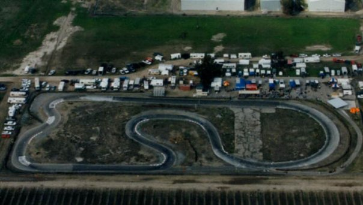

Hobbies
I grew up watching all forms of racing. From Indycar, Rally, Nascar, Moto GP and Formula 1. When I was 8 I went racing for the first time and fell in love with it. I competed in a competitive series called the Kerman Kart Club now knowns as Central California Kart Racing Association for four years. Racing in the real world is very expensive extremely expensive so thats when I started sim racing. Racing online in a competitive environment. I also a member of the SCCA: Sports Car Club of America

Kart/Auto X Racer & Sim Racer.
- Sport: Formula 1
- Team: Ferrari
- Game Sim: I Racing
- North CA Track: Infinion Raceway
- Central CA Track: Laguna Seca
- South CA Track: Long Beach GP
- Kart Club:Central CA Kart Racing Association
- Race Club:SCCA
Above is a list of my Favorite type of racing to team that I follow. I racing is the sim racing game of choice. I racing is a online game that lets you race under licensed event to make sure that the competitors that your paired with are at the same level as you. I have been to many race tracks trough out my life but my favorite's are scattered through out California. Infinion Raceway is a permanent road corse track popular with Indycar and Nascar near Napa valley. Laguna Seca is a track I love the most. I camp right on the track and the track sits right off the coast of Monterey. With large evaluation changes popular with Sports car. Long Beach is a street race. They close of the streets of Long Beach and race in the streets. I raced in a Kart Club for 4 years and as well as the Sports Car Club of America.